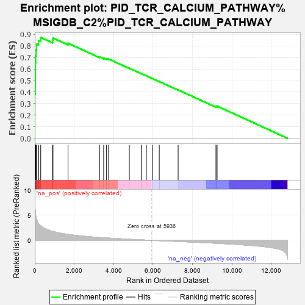
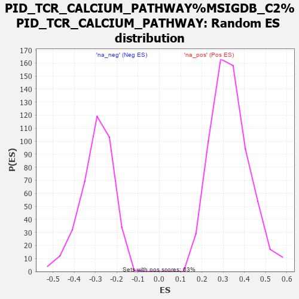

| | | Dataset | carrankstim |
| Phenotype | NoPhenotypeAvailable |
| Upregulated in class | na_pos |
| GeneSet | PID_TCR_CALCIUM_PATHWAY%MSIGDB_C2%PID_TCR_CALCIUM_PATHWAY |
| Enrichment Score (ES) | 0.87363625 |
| Normalized Enrichment Score (NES) | 2.6171086 |
| Nominal p-value | 0.0 |
| FDR q-value | 0.0 |
| FWER p-Value | 0.0 |
Table: GSEA Results Summary

Fig 1: Enrichment plot: PID_TCR_CALCIUM_PATHWAY%MSIGDB_C2%PID_TCR_CALCIUM_PATHWAY
Profile of the Running ES Score & Positions of GeneSet Members on the Rank Ordered List

Fig 2: PID_TCR_CALCIUM_PATHWAY%MSIGDB_C2%PID_TCR_CALCIUM_PATHWAY: Random ES distribution
Gene set null distribution of ES for PID_TCR_CALCIUM_PATHWAY%MSIGDB_C2%PID_TCR_CALCIUM_PATHWAY